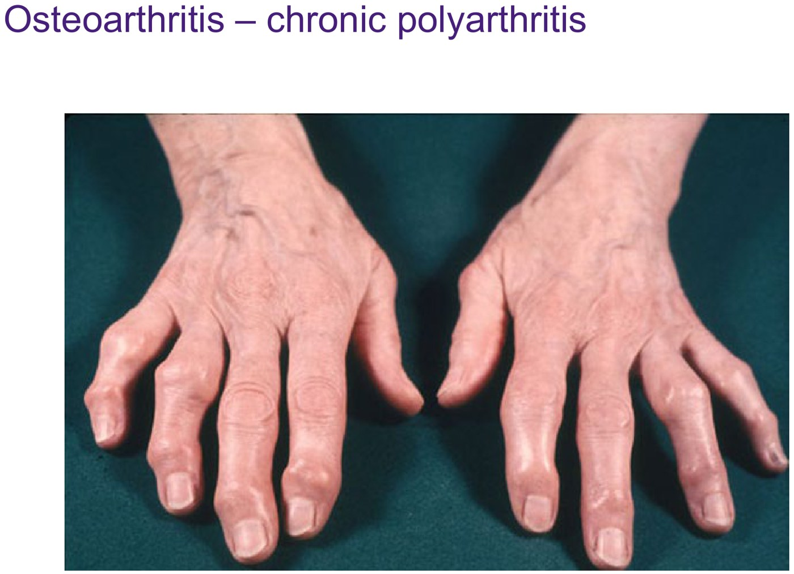
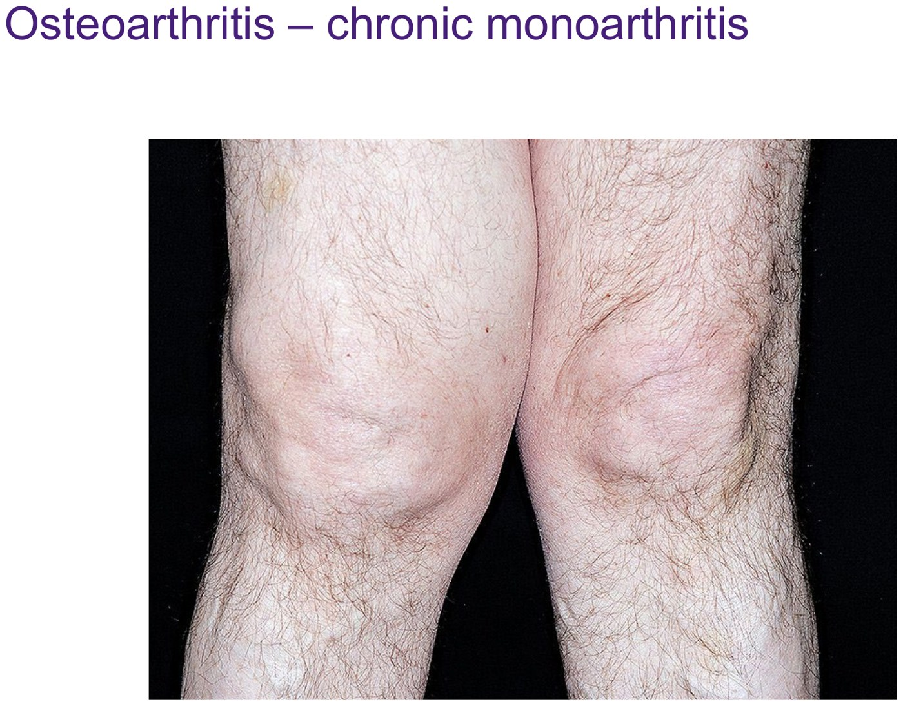
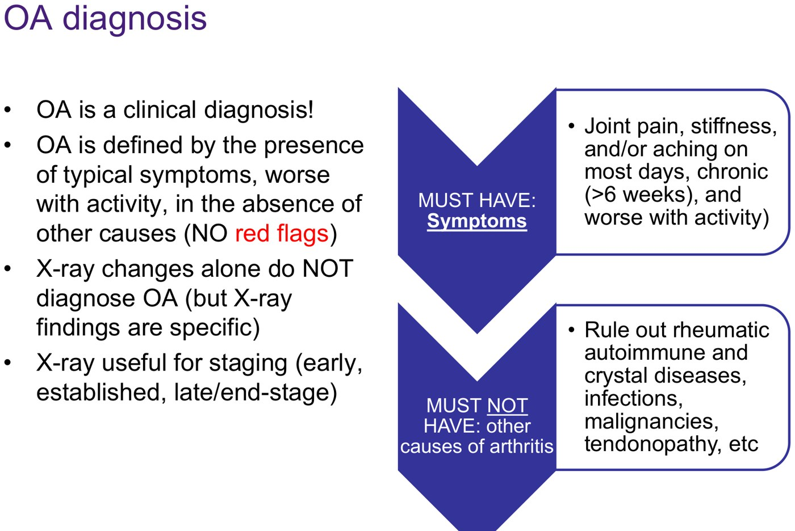
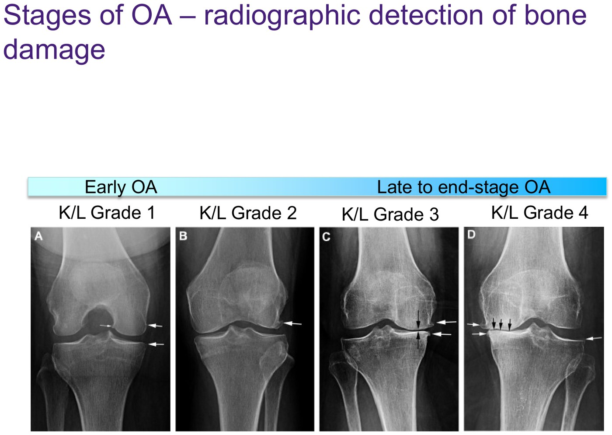
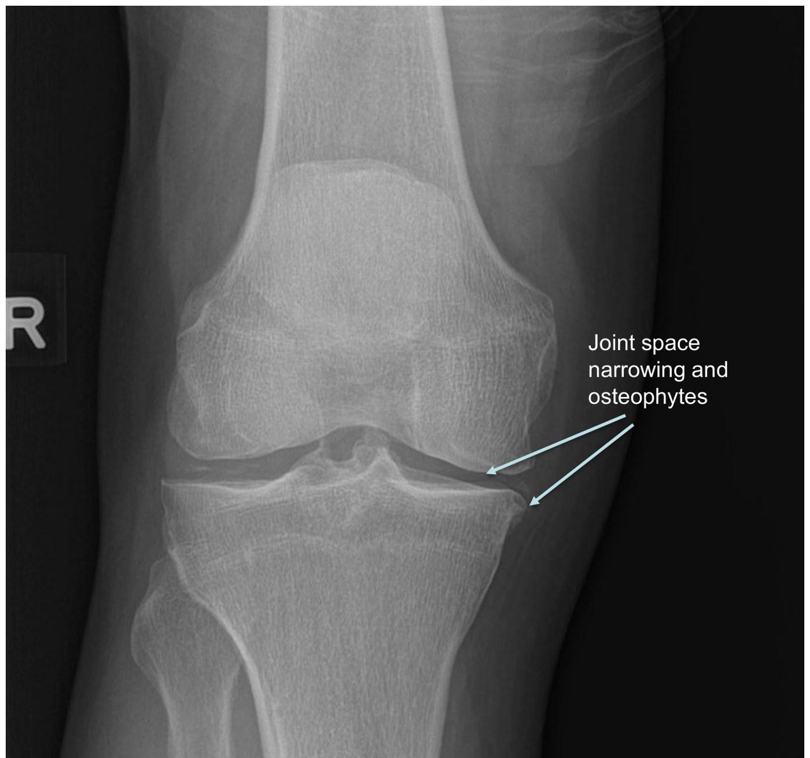
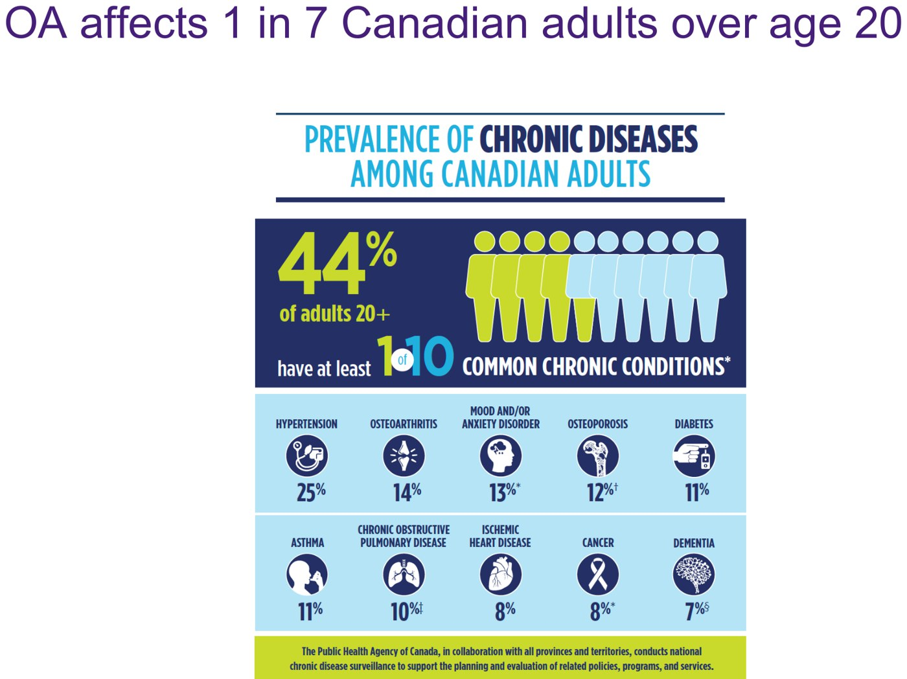
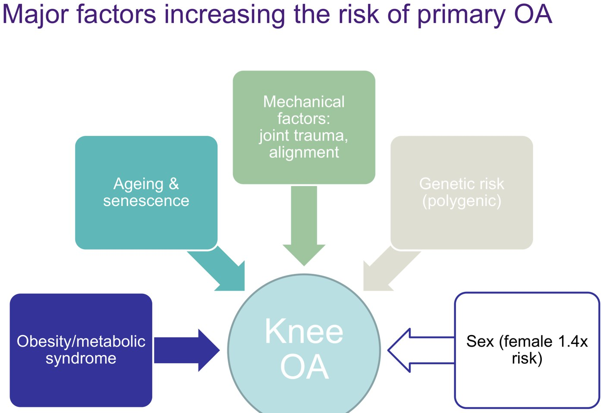
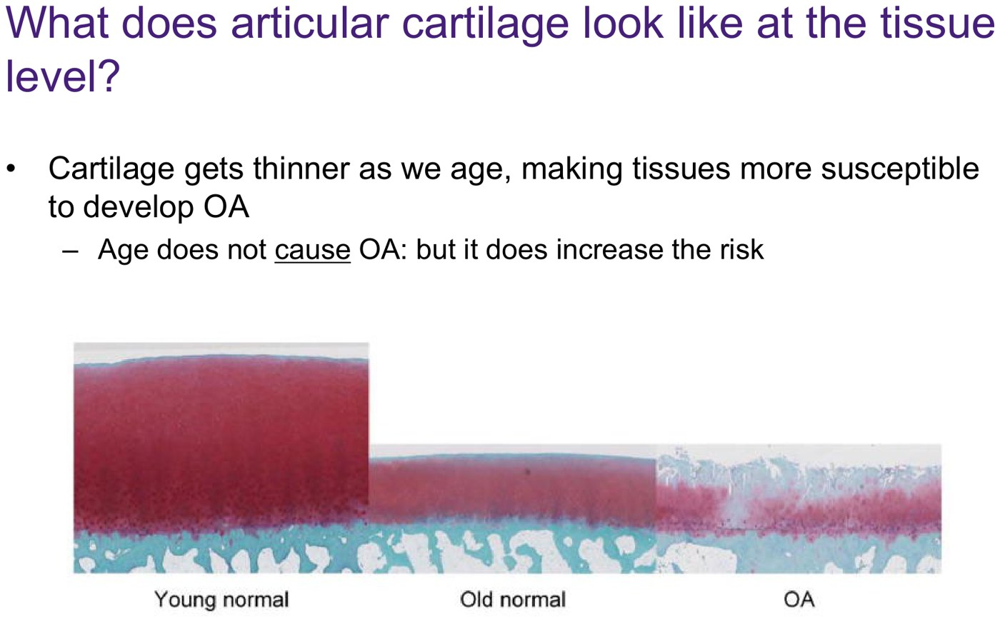
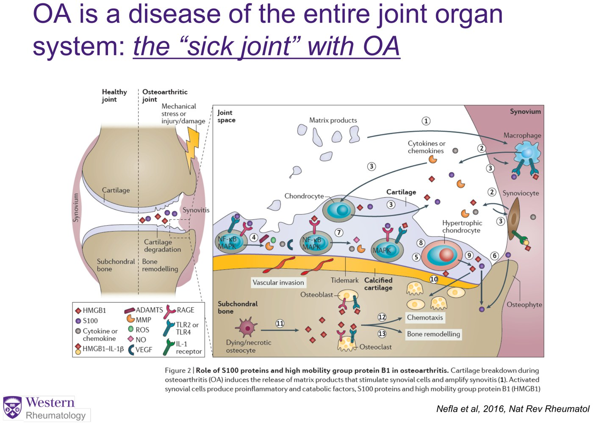

Osteoarthritis: Chronic Monoarthritis
- Chronic monoarthritis = osteoarthritis, osteoarthritis, osteoarthritis, then chronic crystal arthritis; rarely inflammatory, Charcot, chronic infection, synovial tumours, AVN. Commonest joint: the knee, then hip.
- OA is a clinical diagnosis: pain, aching or stiffness on most days for > 6 weeks, worse with activity, morning stiffness < 30 min (often < 5), a cool joint ± effusion, bony enlargement, crepitus, and no red flags. X-ray stages it; it doesn't make the diagnosis. MRI almost never, only to rule out something else.
- 1 in 7 Canadian adults (14%); symptomatic OA usually starts at 35–55. Risks: obesity/metabolic syndrome, age, joint trauma (an ACL tear → OA in 5–10 years), alignment, polygenic family history, female 1.4×. A whole-joint disease (“joint failure”), not wear and tear.
- Treatment: neuromuscular exercise (best evidence), 5% weight loss, 150 min/week of activity; topical NSAIDs (safe, e.g. in CKD), oral NSAIDs if no contraindication, duloxetine, steroid injection for short-term relief. Avoid opioids; hyaluronic acid, PRP, stem cells and glucosamine aren't recommended.
- Joint replacement for end-stage disease with unacceptable symptoms (level 1 evidence). Knee arthroscopy, even for a degenerative meniscal tear, has no benefit.
Learning Objectives
- Define and describe osteoarthritis: basic pathophysiology, epidemiology, risk factors and radiographic features.
- Propose an approach to the diagnosis and treatment of OA: non-pharmacologic, pharmacologic and surgical.
Three recordings (41 min) by Dr. Tom Appleton (rheumatology, St. Joseph's): diagnosis and staging, OA as a disease, and treatment, each built on a case. Acute monoarthritis is 11.2; the hand nodes and OA x-ray features are also in 11.3.
Diagnosis and Staging
Mrs. Tran, 52, type 2 diabetes: knee pain for 7 years, now limiting walks and stairs; 5 minutes of morning stiffness. Antalgic gait, a slightly swollen but cool knee, joint-line tenderness, crepitus.
Chronic Monoarthritis: the Differential
OA also causes polyarthritis (hand DIPs and PIPs), but this module is about OA as a monoarthritis, classically the knee.

OA as polyarthritis: bony nodes at the DIPs and PIPs. From the deck.
OA as monoarthritis: a suprapatellar effusion in one knee. From the deck.| Chronic monoarthritis | |
|---|---|
| 1–3. Osteoarthritis | By far the commonest |
| 4. Chronic crystal arthritis | CPPD (pseudogout); chronic gout (late, with damage); basic calcium phosphate (e.g. Milwaukee shoulder) |
| First separate it from mechanical/sports causes of knee pain without arthritis (e.g. tendinopathy) | |
| Less common | Inflammatory: RA, seronegative, JIA (11.5) Charcot (neuropathic) joint: diabetes, syphilis Chronic infection: atypical mycobacteria, with immunosuppression Neoplasm: pigmented villonodular synovitis, synovial chondromatosis AVN / spontaneous osteonecrosis of the knee |
How OA Presents and How It's Diagnosed
| Typical OA monoarthritis | |
|---|---|
| Joint | One joint: knee >> hip; ankle; shoulder >> first MTP; thumb CMC or a DIP (usually with hand polyarthritis) |
| Symptoms | Pain, aching or stiffness brought on by activity; not chronic widespread pain (think fibromyalgia) |
| Morning stiffness | < 30 min, usually < 5 |
| Exam | Joint tenderness, cool (never warm or hot) ± effusion, joint thickening, crepitus |
| No red flags | Infection, autoimmune disease (RA, SpA), malignancy, fracture, AVN |
Knowledge check: the typical chronic knee OA symptom is knee pain going down stairs (not a red, warm knee, psoriasis, night sweats or light-touch hypersensitivity).

X-ray stages the disease (and is used for research criteria). X-ray changes without symptoms aren't OA, and you don't need an x-ray to diagnose it. MRI and bone scans: almost never, only to rule out a competing diagnosis (the knowledge-check answer). They're expensive and change nothing when the picture is clearly OA.
Staging on X-ray
The space between femur and tibia represents cartilage and meniscus; losing it means tissue loss.
| Stage | X-ray |
|---|---|
| Early (Kellgren–Lawrence 1–2) | Joint space normal; small osteophytes may start |
| Late (KL 3) | Joint space narrowing, some cartilage left; bigger osteophytes |
| End stage (KL 4) | Bone on bone: joint space gone, sclerosis, flattening and deformity |

Kellgren–Lawrence grades 1–4. From the deck.
Late-stage OA (Mr. Liebowitz): medial narrowing and osteophytes. From the deck.OA as a Disease
Ms. Markus, 36, a soccer player who tore her ACL at 23: 5 years of pain with running, now swelling and 5 minutes of morning stiffness. Too young for OA? No.
Epidemiology and Burden
- 14% of Canadian adults over 20 (1 in 7; just behind hypertension). The knowledge-check answer is 14%.
- The most common joint disease in the world; $27.5 billion in Canadian direct and indirect costs (2010), much of it lost work.
- Hip and knee OA rank 11th of 291 causes of years lived with disability (WHO), above TB and heart disease.
- Symptomatic knee OA mostly starts at 35–55, then plateaus, so people live with it for decades.

Primary vs Secondary OA and Risk Factors
| What it is | |
|---|---|
| Primary (most) | Risk factors, no single cause |
| Secondary | Post-traumatic (ACL or meniscus tear → OA in 5–10 years); metabolic/endocrine arthropathy that looks like OA (acromegaly, hyperparathyroidism, hemochromatosis); rare monogenic dysplasias (Stickler); joints damaged by inflammatory arthritis (e.g. RA) |

Risk factors for primary OA. From the deck.
Young, old and OA cartilage: ageing thins it (raises risk); OA loses proteoglycan and fissures. From the deck.| Risk factor | Note |
|---|---|
| Obesity / metabolic syndrome | Load and metabolic inflammation (it raises hand OA risk too) |
| Age | A risk factor, not the cause |
| Mechanical | Joint trauma, malalignment, occupation (heavy labour, kneeling) |
| Genetics | Polygenic: family history |
| Female sex | 1.4× |
| Muscle weakness | Common, and a target for treatment |
Knowledge check: neutral joint alignment is not a risk factor (ageing, an ACL tear, type 2 diabetes and inactivity are).
Pathophysiology: the “Sick Joint”
OA affects every tissue of the joint: cartilage loses proteoglycan and fissures; released cytokines and chemokines inflame the synovium; bone thickens, turns over and grows osteophytes. Chronic metabolic and mechanical stress leads to inflammation, pain and breakdown: joint failure, like heart failure, the joint failing to heal. It is not simply wear and tear, so treatment aims to remove what impairs healing (obesity, inactivity).

Ms. Markus has post-traumatic knee OA; her risk of needing a knee replacement by 55 is probably > 50%, higher without good management.
Treatment and When to Refer
Mr. Liebowitz, 68: chronic left knee pain and stiffness, worse after activity, with flares; dyslipidemia, chronic renal failure, a hip replacement; moved out of his two-storey house. Varus knee, crepitus, painful limited flexion; x-ray shows late-stage OA.
The Four Questions (“the Only Slide You Really Need”)
Early, late or end stage
Alignment, overuse, weakness, gait
To improve pain, function and quality of life
Only for end-stage disease with unacceptable symptoms and impact on quality of life
No treatment yet preserves or extends the life of the joint; the goals are less pain, better function, less disability and better quality of life.
Evidence-Based Management
![Osteoarthritis Tool table from the Arthritis Alliance of Canada and CFPC: non-pharmacological management (lose 5% of body weight, 150 minutes a week of activity, neuromuscular control such as Tai Chi or GLA:D, walking aids and unloader brace, joint protection, CBT, topical heat) and pharmacological management (topical diclofenac, acetaminophen, oral NSAIDs if no contraindication, duloxetine, opioids generally avoided, intra-articular steroid for short-term relief); inconclusive: herbal remedies, glucosamine, topical NSAID for hip OA, intra-articular hyaluronic acid, PRP, stem cells; not recommended: opioids, neuropathic pain modulators, capsaicin, chondroitin.](../../../../assets/images/week-11/osteoarthritis/oa-tool.jpg)
| Non-drug | Detail |
|---|---|
| Exercise | Active physio with neuromuscular exercise (balance, strength: Tai Chi, GLA:D): best evidence (knowledge check). 150 min/week of activity |
| Weight | Even 5% loss helps |
| Assistive devices | Walking aids, insoles, shoes, unloader brace (small effect) |
| Joint protection, education | OT; avoid aggravating movements |
| Self-management, heat | CBT (limited evidence), topical heat |
| Not recommended | Passive therapies: ultrasound, TENS, laser, acupuncture |
| Drugs | Detail |
|---|---|
| Topical NSAIDs | Diclofenac two to three times a day: effective and safe, the choice in chronic kidney disease |
| Acetaminophen | Small, questionable effect |
| Oral NSAIDs | If no contraindication (not in renal failure) |
| Duloxetine (SNRI) | Trial of 2–3 months when others fail |
| Intra-articular corticosteroid | Short-term relief |
| Opioids | Generally avoid (tramadol debated) |
| Not recommended / inconclusive | Hyaluronic acid injection, PRP, stem cells, glucosamine, chondroitin, capsaicin, neuropathic pain drugs |
Mr. Liebowitz's plan
Physio (neuromuscular strength and stability) for at least 3 months and OT; topical NSAID, no oral NSAIDs (renal failure); a steroid injection if refractory; then a 2–3 month duloxetine trial.
Two years later: worse pain, a cane, bone-on-bone on x-ray despite all of the above → refer to orthopedics for knee arthroplasty.
| Surgery | Evidence |
|---|---|
| Joint replacement | Recommended for end-stage disease: strong level 1 evidence over non-surgical care (Skou, NEJM 2015). A salvage procedure, not for earlier stages. |
| Knee arthroscopy (± meniscectomy or repair) | Not recommended: strong level 1 evidence of no meaningful benefit (Kirkley, NEJM 2008, done at Western). Knowledge check: not indicated in a 49-year-old with knee OA and a degenerative meniscal tear. |
Built from Dr. Tom Appleton's “Approach to the diagnosis and management of chronic monoarthritis: osteoarthritis” deck, its three recordings and the module's six knowledge checks. Patient and stock photos and the “become a rheumatologist” slides are left out. Note: the recording's captions say “hypoparathyroidism” among the endocrine causes; the slide says hyperparathyroidism, which the page follows. The burden slide also says 12% of Canadian workers have symptomatic OA; the prevalence the module tests is 14% of adults.